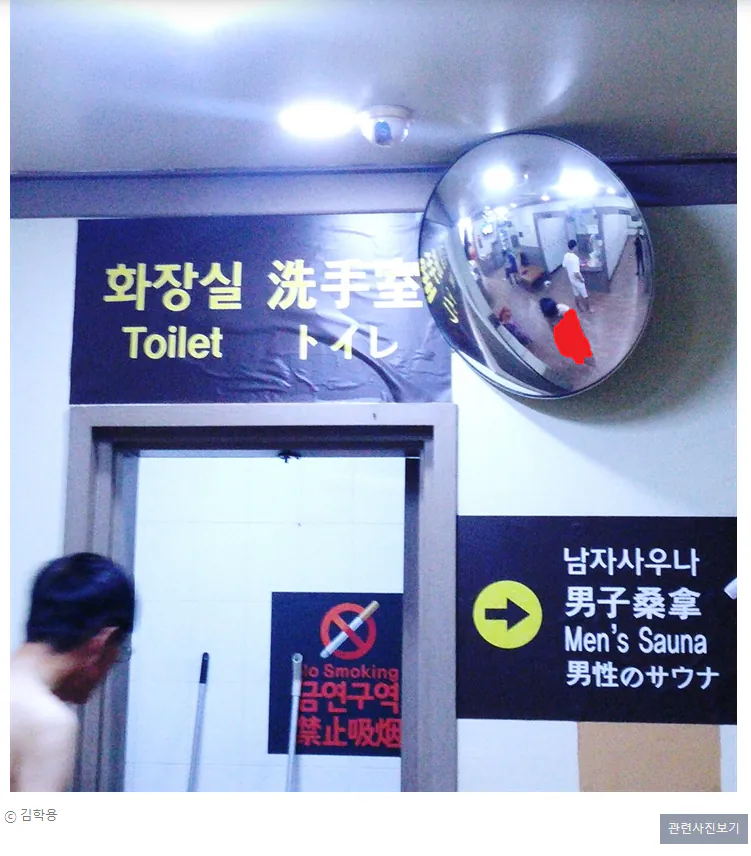

http://ohmynews.com/NWS_Web/View/at_pg.aspx?CNTN_CD=A0002232509
오마이뉴스
탈의실에 CCTV 설치된 목욕탕 있다고 고발하는 뉴스인데
정작 기자도 거울에 반사된 사람 알몸 모자이크도 없이 올려버림 ㄷㄷ

http://ohmynews.com/NWS_Web/View/at_pg.aspx?CNTN_CD=A0002232509
오마이뉴스
탈의실에 CCTV 설치된 목욕탕 있다고 고발하는 뉴스인데
정작 기자도 거울에 반사된 사람 알몸 모자이크도 없이 올려버림 ㄷㄷ
10년 넘은 기산데 아직도 수정 안된 상태라는게 놀랍다 ㅋㅋㅋ
명불허전 오마이
수정됐네 ㅋㅋㅋ
수정됐네
10년만에 수정 ㅋㅋ
수정됨? 난 왜 아직 그대로 보이지
캐시 남아있어서 그럴수도
아무리 언론의 정의와 도의가 땅밑 깊이 처박혔다 한들
오마이를 언론사라고 칭하는건 선을 존나넘는거야
인터넷방문기록싹다 초기화하고 접속했는데도
해당기사
최종 업데이트 16.08.04 16:41
이라고 나오고 그대로 보이는데...
기자가 몰카를? ㄷㄷ
더 큰문제는 저기사 탈의실에 cctv가 있다는거다
폰으로 보면 모자이크고 PC브라우저로 보면 모자이크 안걸려있네
여자였으면 나라 뒤집어짐